Природа Южной Каролины. Цветы и не только.
Закончив утомительную, полную опасностей экспедицию по южнокаролинским
джунглям, спешу поделиться увиденным. Итак растения местных лесов,
преимущественно цветы. Первая половина апреля.
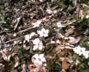
Вот это - обычная ежевика. В местном климате она не образует кустов и
больше напоминает скромную травку. Но ягоды - вполне нормальные.
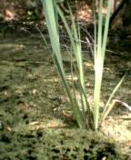
Камыш на болоте. Ничего особенного, но красиво.
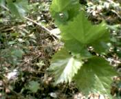
Дикий лесной виноград.
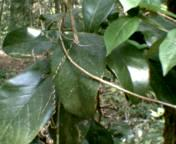
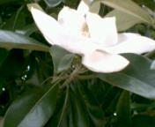
Вот это - обычный фикус, который мы привыкли видеть в комнатных горшках.
Правильное название - южная магнолия. Дерево, высотой метров
двадцать. В мае на нем появляются чудесные огромные цветы, с запахом
ландыша или жасмина. Сами цветы по форме и размеру напоминают водяную
кувшинку.
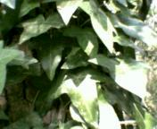
Плющ. Этот парень везде одинаков.
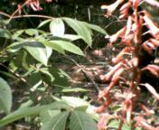
Не знаю, как называется.
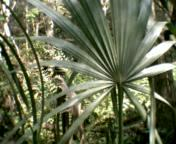
Капустная пальма. Символ Южной Каролины и фрагмент ее флага. В диких лесных
условиях больше напоминает кусты, из за недостатка света. Но на открытых
местах вымахивает метров в пятнадцать. Цветет большими белыми метелками.
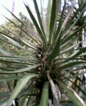
Колючая пальма. Растение о которое можно здорово покалечиться. Листья -
просто как кинжалы острые и твердые. Цветет белыми султанами, напоминающими
огромные ландыши. В Севастополе - часто встречается в парках, а здесь
просто дикое лесное растение.
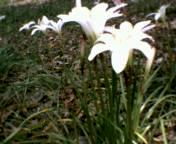
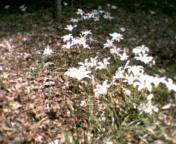
Здорово, да? Я впервые увидел эти лесные цветы. Напоминают нарциссы или
эдльвейсы. Но ни то, ни другое. Кто-нибудь может сказать, что это? Высотой
они, сантиметров двадцать. Пишите.
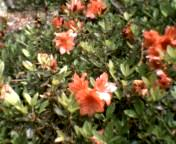
Не знаю, что это.
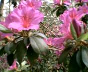
И это - не знаю.
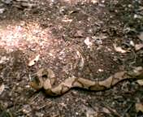
В поисках достойного экземпляра кактуса я потерял бдительность, столь
необходимую в наших лесах, и пнул ядовитую змею. Это Коппер Хэд,
"Медная Голова". Наиболее арессивная из американских змей. Но при этом
наименее ядовитая. Просто чудом я не был покусан.
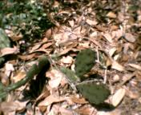
Ну вот, кактус. Обыкновенный, горшковый.
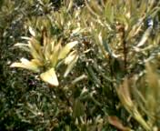
Мирт. Классичессическое растение нашего берега. В честь него назван
наш город "Myrtle Beach", миртовый пляж.
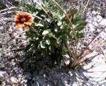
Дикий пеон. Такие растут на песчаных дюнах у самого океана.
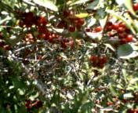
Не знаю, что это за дерево. Ягоды на нем визуально напоминают клюкву.
По весне птицы кормят ими птенцов.
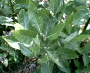
Странное вечнозеленое растение. Образует густые заросли высотой 1-2 метра.
Воздух вокруг наполнен несильным но очень приятным запахом. Я подозреваю,
что это - разновидность чая.
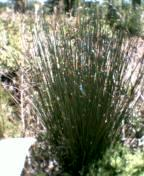
Болотное растение, немного напоминающее дрок. Дома многократно видел в
качестве комнатного цветка.
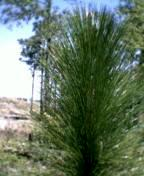
А вот это - молодой сосновый побег. Хвоя у местных сосен - сантиметров по 30
в длину. В апреле наши сосны цветут небольшими, приятно пахнущими цветами.
Город в эти дни засыпан желтой сосновой пыльцой.
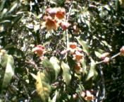
Затрудняюсь назвать.
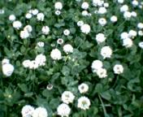
Клевер.
Природа Южной Каролины. Продолжение
Назад|На главную